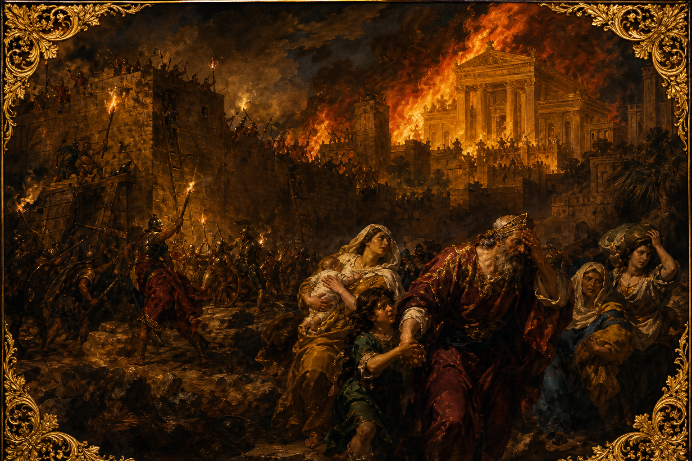

Old Testament · Book 12 of 39
2 Kings
Prophets confront kings, a fiery chariot takes Elijah to heaven, and a divided kingdom slowly walks itself into exile.
2 Kings continues the story of Israel and Judah's kings, tracing two centuries in which God kept sending prophets to call his people home, even as both kingdoms moved steadily toward captivity.
And it came to pass, as they still went on, and talked, that, behold, there appeared a chariot of fire, and horses of fire, and parted them both asunder; and Elijah went up by a whirlwind into heaven.
What happens in 2 Kings
The book opens with Elijah's ministry drawing to its close: he is carried up to heaven in a chariot of fire, and his mantle — and his calling — passes to Elisha, who goes on to perform miracles of healing and provision, including the cleansing of Naaman the Syrian commander's leprosy in the Jordan River. From there, 2 Kings follows a long line of kings over both the northern kingdom of Israel and the southern kingdom of Judah, measuring each one by a single standard: did they turn the nation toward the Lord, or further into idolatry? Israel's kings, almost without exception, lead the nation deeper into false worship until the northern kingdom falls to Assyria and its people are scattered. In Judah, a few kings stand out for their faithfulness — Hezekiah trusts God in the face of an Assyrian siege, and young Josiah, upon discovering the long-lost book of the law in the temple, tears his clothes in grief and leads the nation in one last great reform. But reform cannot undo generations of accumulated sin. After Josiah's death, Judah's remaining kings return to evil, and the book closes with the unthinkable: Jerusalem besieged, the temple burned, the city's walls broken down, and the people carried into captivity in Babylon. Yet even here mercy has the final word — the book ends with an exiled king shown kindness at a foreign table, a small, quiet sign that God had not forgotten his people.
Why it matters
2 Kings is a sober record of patience and consequence. Across two hundred years, the Living God kept sending prophets to warn, to plead, and to call his children back to himself, like a Father longing for his sons to come home. The repeated failure of human kings makes the need for a different kind of king unmistakable — one whose heart will not turn away. Even in the ashes of Jerusalem, the book closes not with abandonment but with a flicker of mercy, a reminder that God's covenant love outlasts every human failure.
Jump to a chapter
2 Kings has 25 chapters — select one to begin reading there.